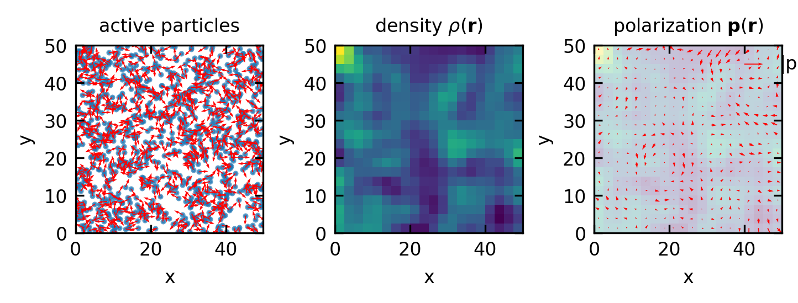
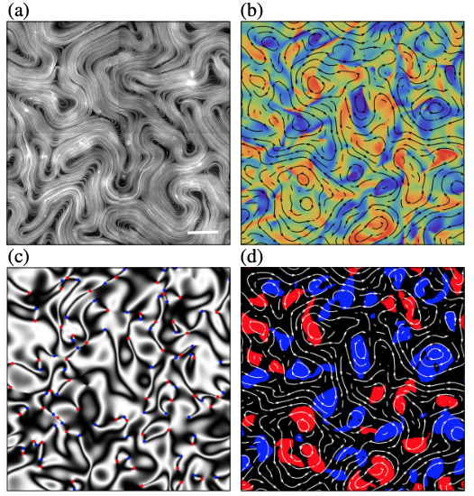

Continuum Theories of Active Matter
In previous lectures, we explored microscopic models of active matter, focusing on individual self-propelled particles like ABPs and RTPs, as well as microswimmers and their hydrodynamic interactions. However, real active systems often contain thousands to millions of constituents, making particle-based approaches computationally expensive and conceptually challenging.
This motivates a continuum approach, where we describe the system using fields that vary continuously in space and time rather than tracking individual particles. Today we’ll examine how these continuum theories help us understand collective phenomena in active systems.
Hydrodynamic Theories and Coarse-Graining
Basic Principles of Coarse-Graining
Coarse-graining is like zooming out from a detailed map to see the big picture. Instead of tracking every particle, we describe the system using smoothly varying fields. Here’s how it works:
Identifying what matters at large scales: Imagine a crowd of people. From far away, you don’t see individuals but patterns of density and movement. Similarly, we focus on:
- Density fields \(\rho(\mathbf{r},t)\) - how many particles are in each region
- Velocity fields \(\mathbf{v}(\mathbf{r},t)\) - how fast and in what direction particles move
- Orientation fields \(\mathbf{p}(\mathbf{r},t)\) - which way particles are pointing
Keeping track of what’s conserved: Some quantities like the total number of particles can’t disappear. This gives us equations like: \[\frac{\partial \rho}{\partial t} + \nabla \cdot \mathbf{j} = 0\] This simply means: if particles flow out of a region (\(\nabla \cdot \mathbf{j}\) positive), the density must decrease over time.
Describing how things flow: We need equations for how currents and forces depend on our fields. Like how traffic flow depends on car density - too many cars and everything slows down.
Adding the “active” ingredients: What makes active matter special is that particles consume energy to move. This creates effects that wouldn’t exist in passive systems, like spontaneous flows or pattern formation.
Let’s see this in action by looking at a system of Active Brownian Particles (ABPs):
From these coarse-grained fields, we can derive the hydrodynamic equations by:
From the density field, we obtain the continuity equation: \[\frac{\partial \rho}{\partial t} + \nabla \cdot \mathbf{j} = 0\] where \(\mathbf{j} = v_0 \rho \mathbf{p}\) for ABPs. Here \(v_0\) is the self-propulsion speed of the active particles (the constant speed at which ABPs move).
For the polarization field, the dynamics include alignment, rotational diffusion, and spatial diffusion: \[\frac{\partial \mathbf{p}}{\partial t} = -D_r \mathbf{p} + v_0 \nabla \rho + D_p \nabla^2 \mathbf{p} + ...\]
By tracking how these fields evolve over time, we transition from tracking individual particles to following continuous fields, making analysis of large-scale behaviors tractable.
Active vs. Passive Hydrodynamics
A key feature that distinguishes active from passive hydrodynamics is the presence of active stresses. Let’s break this down with some everyday examples:
Passive stress is like a stretched rubber band wanting to return to its original shape. It derives from a free energy (like elastic energy) and works to minimize that energy. In equilibrium systems, these stresses always dissipate energy.
Example: When you stretch a liquid crystal, it develops passive stresses that try to restore its preferred alignment.
Active stress is fundamentally different - it’s like having tiny motors embedded throughout the material. These stresses:
- Don’t derive from a free energy (they’re not trying to minimize anything)
- Continuously inject energy at the microscopic scale (like the ATP-consuming motor proteins we’ll see in active liquid crystals)
- Create patterns and flows that would be impossible in equilibrium systems
Example: In the microtubule-kinesin systems we’ll examine later, motor proteins create stresses that drive chaotic flows and pattern formation.
The total stress in an active fluid combines both passive and active components. The type of active stress (whether pushing outward or pulling inward) determines what kinds of instabilities develop in the system, which we’ll explore later when discussing active liquid crystals.
Active Liquid Crystals
Active liquid crystals represent a fascinating class of materials that combine the orientational ordering characteristic of conventional liquid crystals with out-of-equilibrium activity. Unlike passive liquid crystals that minimize free energy and relax to equilibrium, active liquid crystals continuously convert stored or ambient energy into mechanical work at the microscopic level, driving the system away from equilibrium. This active energy conversion creates novel dynamic behaviors not observed in passive systems. Several biological and synthetic systems exemplify active liquid crystalline behavior. Cytoskeletal filaments such as microtubules and actin, when powered by ATP-consuming motor proteins like kinesin or myosin, form active liquid crystalline structures essential for cell division and motility. Dense bacterial suspensions containing elongated cells such as E. coli or B. subtilis naturally tend to align through steric interactions while simultaneously self-propelling, creating active nematic or polar order. In the laboratory, scientists have created synthetic active liquid crystals using vibrated granular rods, light-activated colloidal particles, or specially designed microswimmers that can be controlled externally.
Nematic Order Parameter
For rod-like active particles that lack head-tail distinction (meaning they are symmetric when flipped 180 degrees), the appropriate mathematical description uses the nematic order parameter. Instead of a vector that would indicate a preferred direction with a specific head and tail, we use a second-rank tensor known as the nematic tensor:
\[Q_{ij} = S \left(n_i n_j - \frac{1}{d}\delta_{ij}\right)\]
In this expression, \(S\) represents the magnitude of nematic order, measuring how strongly the particles are aligned (with \(S=0\) indicating complete disorder and \(S=1\) perfect alignment). The unit vector \(\mathbf{n}\) (with components \(n_i\)) is called the director and indicates the average orientation of the particles at a given point. The subscripts \(i\) and \(j\) denote tensor components (e.g., \(x\), \(y\), or \(z\) in 3D space). The term \(\delta_{ij}\) is the Kronecker delta (equal to 1 when \(i=j\) and 0 otherwise), and \(d\) is the dimension of the system (typically \(d=2\) for a 2D system or \(d=3\) for a 3D system). The subtraction of \(\delta_{ij}/d\) ensures that the tensor is traceless (its sum of diagonal elements equals zero), reflecting the fact that nematic order represents an orientation without a preferred direction.
Active Nematic Hydrodynamics
The evolution of active nematic liquid crystals is governed by a set of coupled partial differential equations that describe how the flow field and orientational order evolve over time. These equations combine conventional liquid crystal hydrodynamics with active terms that capture non-equilibrium effects.
The flow field is described by the Navier-Stokes equation, modified to include active stresses:
\[\rho \left(\frac{\partial \mathbf{v}}{\partial t} + \mathbf{v} \cdot \nabla \mathbf{v}\right) = \eta \nabla^2 \mathbf{v} - \nabla p + \nabla \cdot \boldsymbol{\sigma}^{passive} + \nabla \cdot \boldsymbol{\sigma}^{active}\]
Here, \(\rho\) is the fluid density, \(\mathbf{v}\) is the velocity field (with components \(v_i\) representing flow velocity in different directions), \(t\) is time, and \(\nabla\) is the gradient operator. The term \(\mathbf{v} \cdot \nabla \mathbf{v}\) represents advection (how the flow carries itself). On the right side, \(\eta\) is the shear viscosity coefficient characterizing the fluid’s resistance to flow, \(\nabla^2 \mathbf{v}\) is the Laplacian of the velocity field describing diffusion of momentum, and \(p\) is the pressure. The term \(\boldsymbol{\sigma}^{passive}\) represents passive stresses arising from elastic deformations of the nematic order, while \(\boldsymbol{\sigma}^{active}\) represents active stresses generated by energy conversion. For incompressible fluids, we additionally impose the constraint \(\nabla \cdot \mathbf{v} = 0\), meaning the fluid density remains constant as it flows.
The nematic order parameter evolves according to:
\[\frac{\partial \mathbf{Q}}{\partial t} + \mathbf{v} \cdot \nabla \mathbf{Q} = \lambda \mathbf{S} \cdot \mathbf{Q} + \mathbf{Q} \cdot \mathbf{\Omega} - \mathbf{\Omega} \cdot \mathbf{Q} - \Gamma \frac{\delta \mathcal{F}}{\delta \mathbf{Q}} + \mathbf{D}\]
The left side describes how the nematic tensor \(\mathbf{Q}\) changes over time, with \(\mathbf{v} \cdot \nabla \mathbf{Q}\) representing the advection of nematic order by the flow. On the right side, \(\mathbf{S} = \frac{1}{2}(\nabla \mathbf{v} + (\nabla \mathbf{v})^T)\) is the strain rate tensor describing the symmetric part of velocity gradients (how the fluid is being stretched), and \(\mathbf{\Omega} = \frac{1}{2}(\nabla \mathbf{v} - (\nabla \mathbf{v})^T)\) is the vorticity tensor describing the antisymmetric part (how the fluid rotates). The parameter \(\lambda\) is the flow-alignment parameter that determines how nematic particles align in response to flow, with \(|\lambda| > 1\) indicating flow-aligning behavior and \(|\lambda| < 1\) indicating flow-tumbling behavior. The term \(-\Gamma \frac{\delta \mathcal{F}}{\delta \mathbf{Q}}\) represents relaxation toward minimizing the free energy \(\mathcal{F}\), with \(\Gamma\) being the rotational diffusion coefficient. The free energy \(\mathcal{F}\) typically includes terms for the isotropic-nematic phase transition, elastic distortions (splay, twist, and bend), and surface anchoring effects. Finally, \(\mathbf{D}\) represents additional contributions such as diffusion of the order parameter.
The active stress that makes this system truly non-equilibrium is given to lowest order by:
\[\boldsymbol{\sigma}^{active} = -\zeta \mathbf{Q}\]
Here, \(\zeta\) is the activity parameter measuring the strength of active forces. The sign of \(\zeta\) critically determines the system’s behavior: when \(\zeta < 0\) (extensile activity), the active units push outward along their long axis, as observed in microtubule-kinesin systems where motor proteins slide antiparallel filaments apart. When \(\zeta > 0\) (contractile activity), the active units pull inward along their long axis, as seen in actomyosin networks where myosin motors contract the actin filaments. Higher-order corrections to the active stress may include terms proportional to gradients of \(\mathbf{Q}\) or density variations.
Active Turbulence and Defect Dynamics
One of the most striking phenomena in active nematics is the emergence of active turbulence, a state of chaotic fluid motion fundamentally different from conventional inertial turbulence. Active turbulence exhibits several distinctive characteristics that set it apart from its passive counterpart. The flow field displays complex vortex structures with characteristic length scales determined by the balance between active stresses and elastic restoring forces, not by an energy cascade from large to small scales as in inertial turbulence. The dimensionless “active Reynolds number” \(Re_{a} = \zeta L^2/K\), where \(L\) is the system size and \(K\) is the elastic constant, characterizes the relative importance of active versus elastic forces.
Active turbulence is characterized by the continuous creation and annihilation of topological defects in the nematic order. Defects are points (in 2D) or lines (in 3D) where the nematic order parameter becomes undefined. They are classified by their topological charge, which measures how the director rotates around the defect. The most common defects in 2D nematics have charges +1/2 and -1/2, referring to a rotation of the director by +π and -π around the defect, respectively.
A unique feature of active nematics is that these defects are not merely passive structures but actively participate in the dynamics. +1/2 defects have a comet-like structure with a well-defined polarity (a vector pointing from the “tail” to the “head”), while -1/2 defects have three-fold symmetry with no clear polarity. Due to this structural asymmetry, +1/2 defects generate asymmetric flow fields that cause them to self-propel in the direction of their “head” with a velocity proportional to the activity: \(v_{+1/2} \sim \zeta/\eta\), where \(\eta\) is the viscosity. The self-propulsion velocity can be derived by solving the Stokes equation with the active stress distribution around the defect. In contrast, -1/2 defects have symmetric structure and generally remain approximately stationary, though they can be moved by background flows.
The interaction between defects leads to complex spatiotemporal patterns. Defects of opposite charge attract each other and annihilate when they come close enough, converting elastic energy into flow. Simultaneously, active stresses continuously generate new defect pairs by tearing the nematic field apart when elastic distortions become too strong. This balance between creation and annihilation results in a steady-state defect density that scales with activity as \(\rho_{defect} \sim \sqrt{\zeta/K}\), where \(K\) is the elastic constant. The resulting defect dynamics can form ordered patterns such as nematic order of defects themselves, crystalline arrangements, or even active defect turbulence where the defect trajectories become chaotic. These defect dynamics play a crucial role in biological contexts, such as cell division and collective cell migration, where they can dictate locations of mechanical stress concentration or cell extrusion.

- A two-dimensional active nematic suspension ofmicrotubule bundles and kinesin at the water-oil interface. Thewhite scale bar corresponds to100μm (courtesy of the DogicLab). (b)–(d) Numerical simulations of an extensile activenematic obtained from an integration of Eq.(1). (b) Flow velocity(black streamlines) and vorticity (background color). (c)Schlierentexture constructed from the director fieldn. The red and bluedots mark, respectively, theþ1=2and−1=2disclinations.(d) Clockwise rotating (blue) and counterclockwise rotating(red) vortices, detected by measuring the Okubo-Weiss field. source